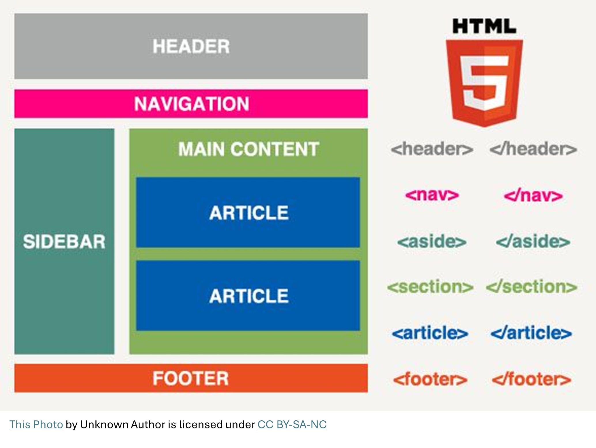

Что такое HTML?
Изучение навыка использования HTML-документа является фундаментальным шагом в разработке веб-приложений. Этот навык позволяет создавать веб-сайты высокого качества, подходящие для просмотра в различных поисковиках и на разных устройствах.
HTML обладает простой структурой и легко усваивается, что делает его прекрасным выбором для начинающих разработчиков. HTML-документ способствует созданию статических веб-страниц и играет первую и ключевую роль при освоении других инструментов вёрстки и версий страницы. Например, CSS (Cascading Style Sheets) и язык JavaScript.
HTML играет важнейшую роль внутри сферы веб-разработки и программирования, так как он определяет структуру документа, обеспечивая правильное отображение информации в поисковиках. Кроме того, тег HTML часто сочетается с другими технологиями, такими как CSS (Cascading Style Sheets) для придания стиля и JavaScript для интерактивных функций на веб-сайтах.
Зачем нужен HTML?
С использованием языка HTML поисковик выполняет запрос по адресу, указанному пользователем, и получает файл с расширением html. Затем изучает код, распознает знакомые ему сигналы, исходя из которых он определяет, какие слова отобразить, где разместить заголовки и какие именно элементы создать на странице. Так, код из файла преобразуется в нужные визуальные объекты. В целом, HTML является фундаментальным инструментом в веб-разработке, который делает возможным создание, отображение и взаимодействие, делая интернет доступным и функциональным для миллионов людей по всему миру.
Как работает HTML и для чего он предназначен?
- HTML использует специальные символы — теги — для определения различных компонентов на странице. Например, тег p используется для создания абзацев текста, а h1 для установки заголовков. Элементы могут быть вложены друг в друга, что создаёт иерархическую устройство страницы.
- Теги обычно имеют две части — открывающую и закрывающую. Например, p — это открывающий тег, а /p — закрывающий тег. Содержание таблиц располагается между этими тегами.
- Теги также могут содержать атрибуты, которые предоставляют дополнительную информацию. Например, новый атрибут src в теге img указывает на источник изображения.
- Части могут быть вложены друг в друга, образуя древовидную структуру. Это позволяет определить, как всё связано друг с другом и как оно должно быть отображено на странице.
- При загрузке браузер изучает HTML-код и его теги, интерпретирует его и отображает контент на экране пользователя в соответствии с указанными правилами и стилями.
Преимущества и недостатки HTML
Это стандартный язык основной разметки тегов в тексте для веб-страниц. Он имеет свои преимущества и недостатки, которые важно учитывать при разработке и использовании веб-сайтов. Существует несколько аспектов — собрали их в один список.
ПРЕИМУЩЕСТВА
- HTML широко поддерживается любыми браузерами и на различных платформах, что делает его универсальным языком для веб-контента.
- Язык программирования HTML относительно прост в изучении и использовании. Даже новички могут быстро освоить его основы.
- HTML предоставляет семантические звенья, которые помогают поисковым системам понимать структуру текста веб-страницы, что положительно влияет на SEO и открытость сайта.
- Код гипертекста легко интегрируется с CSS для стилизации и язык JavaScript для интерактивных функций, что позволяет создавать мощные веб-приложения.
- С помощью использования вёрстки HTML и CSS можно создавать адаптивные веб-страницы, которые отлично отображаются на различных устройствах.
- Правильное применение разметки HTML, текста, таблиц и атрибутов может существенно улучшить доступность веб-страниц с ограниченными возможностями.
НЕДОСТАТКИ
- HTML сам по себе обладает ограниченными гипертекстовыми средствами для сложного и креативного дизайна веб-страниц. Для более выразительных дизайнов и данных необходимо использовать CSS и, возможно, язык JavaScript.
- HTML-страницы и их описания по умолчанию являются статичными и не способны обеспечивать сложные динамические функции без привлечения дополнительных технологий, таких как JavaScript и серверные языки программирования.
- Разные браузеры могут по-разному интерпретировать HTML, что может вызывать проблемы совместимости и потребность в дополнительных усилиях для обеспечения однородного отображения на разных платформах.
- HTML-код, получаемый от некоторых пользователей (например, через веб-формы), может представлять риск для безопасности, так как может стать самым серьёзным источником уязвимостей, таких как инъекции SQL и XSS (межсайтовый скриптинг). Поэтому обеспечение безопасности веб-приложений требует дополнительных мер.
- Для разработки крупных и очень сложных бесплатных веб-приложений, таких как социальные сети или онлайн-магазины, требуется использование более мощных инструментов, текстов и фреймворков.